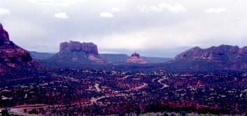

セドナ日記 〜 第５日目 98.5.8
最後のエアポートメサ
鍵返し忘れ騒動のおかげで、ベルロックに登っている余裕がなくなった。簡単に行ける所としては、教会かエアポートメサが思い浮かぶ。（最後にお土産やに行ったりはしない。）ここは、やはりボルテックスを選びたい。夕日、朝日を見に何度も足を運んだ、エアポートメサにもう一度行く。
 きっと、エアポートメサは僕らのボルテックスなんだろう。そういえば、太陽が地平線近くにないときにここに来るのは初めてだった。「セドナのへそ」というべき場所に位置する、エアポートメサからの眺めは、何度来ても素晴しい。頂上に登れば、360度の視界が広がる。赤い岩山、点在する林。そして、風景にマッチした住宅。桃源郷といってもいいかもしれない。でも桃の木がないか.....。
日本にも、きっと美しいところはいっぱいあると思う。だが、セドナのように街と自然がうまく融合したところは思い当たらない。アメリカのなかでもどうなのだろうか？
いずれにしろ、このような素敵なところが地球上にあることがわかって、とても嬉しかった。「ありがとう。」と目に見える、そして感じることができる、その土地、風景、生命、全ての存在に感謝した。